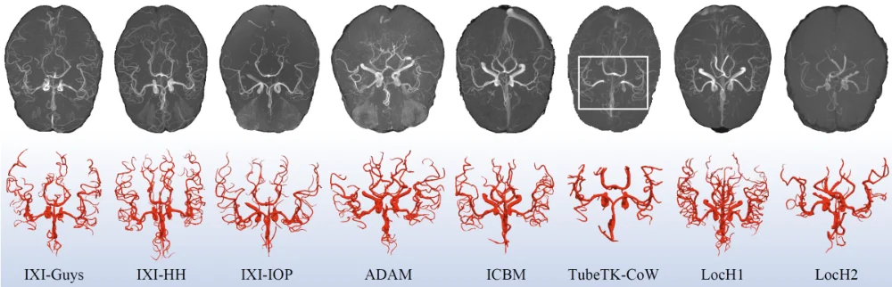

COSTA v1
These datasets are released for academic research use only.
Download here: https://doi.org/10.5281/zenodo.11025761

The database contains TOF-MRA images acquired at two different magnetic field strengths (1.5T and 3.0T), including 423 TOF-MRA images from 8 disparate data centers, which utilize MRI scanners from 4 distinct vendors. The details of COSTA are shown in the following table.
|
Datasets |
Details |
Accessible |
|
IXI-Guys |
IXI-Guys dataset consists of 60 MR images of healthy subjects randomly selected from the IXI Dataset, all acquired at Guy's Hospital in London, UK. Each subject underwent TOF-MRA imaging using a 1.5T MRI scanner (Philips Medical System Gyroscan Intera) with the following parameters: TR/TE = 20/6.9 ms, flip angle = 25. All images in the dataset share the same dimensions of 512x512x100 voxels and have a voxel spacing of 0.47x0.47x0.80$ mm^3. |
Y |
|
IXI-HH |
IXI-HH dataset includes MRA images of 60 healthy volunteers randomly chosen from the IXI Dataset. These images were obtained using a Philips 3.0T MRI system at Hammersmith Hospital in London, UK, with imaging parameters set at TR/TE = 16.72/5.75 ms and a flip angle of 16. All images in this dataset share the same dimensions of 512x512x100 voxels, with a voxel spacing of 0.47x0.47x0.80 mm^3. |
Y |
|
IXI-IOP |
IXI-IOP dataset comprises 50 MR images of healthy subjects randomly selected from the IXI Dataset, originally obtained from the Institute of Psychiatry. These images were acquired using a General Electric (GE) 1.5T MRI scanner for TOF-MRA imaging, but specific scan parameters are unavailable. The dataset features images with dimensions of 1024x1024x92 and a voxel spacing of 0.26x0.26x0.80 mm^3. |
Y |
|
ADAM |
ADAM dataset was obtained from the online Aneurysm Detection and Segmentation Challenge (https://adam.isi.uu.nl) and comprises 107 TOF-MRA images. All images were acquired using a 3.0T MRI scanner with a TR/TE of 22/3.45 ms. Notably, the dataset exhibits a range of physical resolutions and voxel sizes, varying from 0.20x0.20x0.40 mm^3 to 0.59x0.59x1.00 mm^3, and from 256x256x100 voxels to 560x560x140 voxels, respectively. Of the subjects in this dataset, 85 were diagnosed with aneurysms, while the remaining 22 were healthy individuals. |
Y |
|
ICBM |
ICBM dataset features 50 TOF-MRA images of healthy volunteers, evenly split between 25 females and 25 males, ranging in age from 19 to 64 years. These images were sourced from the Magnetic Resonance Angiography Atlas Dataset (https://www.nitrc.org/projects/icbmmra) and were captured using a 3.0T Siemens MRI scanner. They exhibit a consistent physical resolution of 0.62x0.62x 0.62 mm^3 and possess dimensions of 288x320x200 voxels. |
Y |
|
TubeTK-CoW |
TubeTK-CoW dataset is a subset of the TubeTK. It includes 50 TOF-MRA images from 25 male and 25 female healthy volunteers, obtained with a standardized protocol on a SIEMENS 3.0T MRI scanner. The images have a voxel spacing of 0.51x0.51x0.80 mm^3 and dimensions of 448x448x128 voxels. |
N |
|
LocH1 |
LocH1 dataset comprises 27 TOF-MRA images gathered from a local hospital, all acquired with a 3.0T SIEMENS MRI scanner. The images exhibit a range of physical resolutions, varying from 0.34x0.34x0.80 mm^3 to 0.39x0.39x0.90 mm^3, and voxel dimensions that span from 406x512x186 to 500x640x121. Among the subjects, 2 of the 27 had Moyamoya disease, while the others were healthy individuals. |
Y |
|
LocH2 |
LocH2 dataset includes 19 TOF-MRA volumes of healthy subjects from a different local hospital. These subjects all underwent TOF-MRA imaging using a 3T United Imaging Healthcare (UIH) MRI scanner. The dataset features a variety of physical resolutions, with ranges from 0.39x0.39x0.50 mm^3 to 0.43x0.43x1.00 mm^3, and consistent voxel dimensions of 442x512x192. |
N |